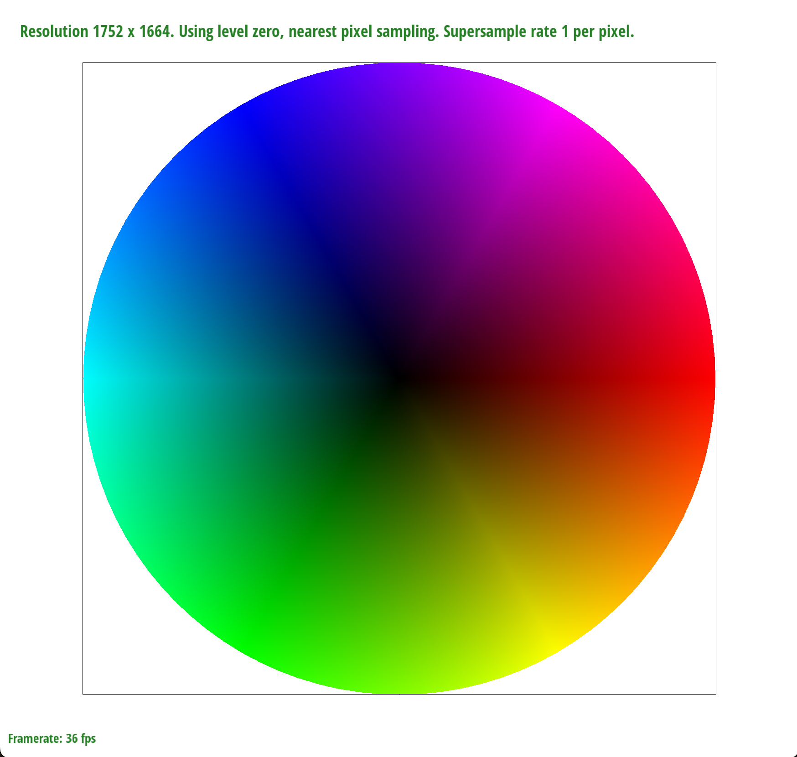
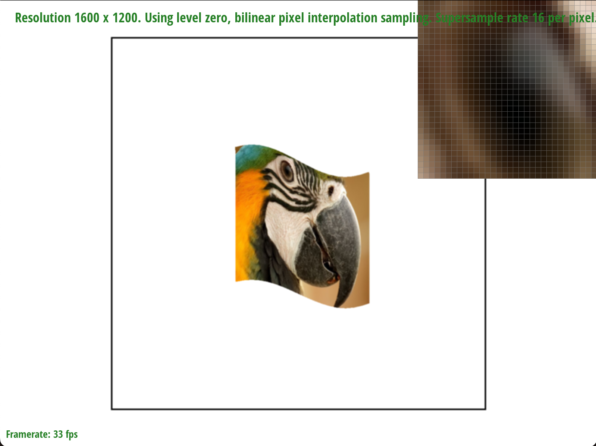

Overview
Give a high-level overview of what you implemented in this homework Think about what you've built as a whole. Share your thoughts on what interesting things you've learned from completing the homework.
Section I: Rasterization
Part 1: Rasterizing single-color triangles
Given the three points within a triangle, rasterization simply means that we must iterate over every point within a bounding box that encapsulates the triangle. For each point, we must check whether or not it lies within the triangle. While there are many ways to go about implementing this, we elected to use Barycentric coordinates for its slight performance boost over the three-line test and its relative simplicity to code. If
(x_p, y_p)ends up residing within the triangle, we fill in the pixel using the provided helpers.The algorithm fits tightly within the specified bound, as we set the edges of the boundary box surrounding the triangle to be equivalent to the top-left and top-right corners based on the minimum and maximum
(x, y)values among the three vertices.If we zoom into the corner of a triangle, we see lots of aliasing (specifically jaggies) thanks to a lack of supersampling, as seen in the attached figure.
|
|
Part 2: Antialiasing triangles
Our supersampling algorithm involves increasing the resolution of the
sample_bufferby the square root of thesampling_rate, allowing for detailed within-pixel sampling. When rasterizing a triangle, the algorithm first determines a bounding box to contain the triangle, ensuring vertices are arranged counterclockwise for consistency. It then proceeds to iterate over this area, subdividing each pixel into sub-pixels as per the supersampling rate, and uses thepoint_in_trianglefunction to determine if these sub-pixels are within the triangle. Colored positions in thesample_buffercorrespond to these sub-pixels.To integrate supersampling, we made several modifications to the rasterization pipeline:
RasterizerImp::set_sample_rate(): This function was adapted to update thesample_bufferdimensions, multiplying each side by the square root of the sample rate, ensuring the buffer can accommodate the increased sampling density.RasterizerImp::rasterize_triangle(): Modified to iterate over subpixels, accounting for the finer granularity provided by supersampling.RasterizerImp::fill_pixel(): Adjusted to fill subpixels with consistent color, preparing for the averaging process in downsampling.RasterizerImp::resolve_to_framebuffer(): This critical function was reworked to average the colors of each pixel's subpixels, effectively downsampling the supersampled image to the original resolution while smoothing color transitions.
Supersampling is beneficial for its anti-aliasing capabilities. By rendering the scene at a higher resolution and then averaging these results to downsample, it significantly smooths out jagged edges around objects, in this case, triangles. This method provides a cleaner, more continuous visual appearance, enhancing the overall image quality. Through these modifications, our supersampling approach effectively reduces aliasing, offering a superior rendering outcome compared to traditional rasterization methods.
|
|
|
|
|
|
Part 3: Transforms
- Our updated robot, named Carl, is doing the splits with his arms raised in the air. We also made him neon green because that is a cool color.
- Getting Carl to do the splits was rather simple; for each leg, we rotated it by 90º. The left leg was rotated 90º CW while the right leg was rotated 90º CCW.
- We did something similar with the arms, rotating them 90º CW and CCW, respectively.
- The full 90 degree rotation seemed unnatural, so we actually rotated the limbs by 80º in the proper direction.
|
|
Section II: Sampling
Part 4: Barycentric coordinates
- Barycentric coordinates allow for the specification of any point within a triangle as a weighted mix of the triangle's vertices. This method assigns weights to the vertices, indicating their influence on a point's position and attributes, such as color. In a triangle with vertices colored red, green, and blue, barycentric coordinates enable smooth color blending across the triangle, with the color at any point being a mix of the colors at the vertices based on the point's distance to them. This approach is useful for interpolating values across the surface of a triangle, demonstrating a gradient effect where colors transition smoothly from one vertex to another.
|  |
Part 5: "Pixel sampling" for texture mapping
Pixel sampling is a technique in texture mapping for how textures are applied to 3D models, involving the selection of texture pixels (texels) to match the surface being textured. The simplest method, nearest neighbor sampling, selects the closest texel to a surface point, offering speed at the expense of potential pixelation. Bilinear sampling averages the colors of the four nearest texels based on their proximity to the point, providing smoother transitions and improved visual quality. The choice between these methods impacts the balance between rendering performance and the smoothness of the texture appearance, with nearest neighbor being faster but more prone to pixelation, and bilinear offering a more visually pleasing result at a slight computational cost.
To integrate pixel sampling:
RasterizerImp::rasterize_textured_triangle: Copied the upsampling method from task 2 and determined whether to use nearest or bilinear based on the givenpsm.Texture::sample_nearest: Implemented the nearest sampling method.Texture::sample_bilinear: Implemented the bilinear sampling method.
The key difference between nearest neighbor and bilinear sampling lies in their trade-off between speed and smoothness. Nearest neighbor jumps straight to the closest texel, making it super quick but sometimes blocky or pixelated, especially when you're zooming in on textures or stretching them over large areas. Bilinear sampling takes a bit more time because it looks at the four closest texels and blends them together, smoothing out the edges and making everything look nicer when the texture's size doesn't match up perfectly with the surface it's covering. You'll really notice the difference when textures are being scaled up a lot. Nearest neighbor can make things look jagged and rough around the edges, while bilinear smooths things out.
|
|

|
|
|
|
Part 6: "Level sampling" with mipmaps for texture mapping
Level sampling in this context refers to a method used to determine the proper level of detail/resolution of a texture applied to a surface, leading to an uptick in efficiency and visual quality when rendering our images.
Implementing level sampling involves: (1) generating mipmaps for a given texture, (2) calculating the appropriate mipmap level based off what configuration we desire, and (3) sampling the texture value using the desired method (neighbor sampling, sampling from the 0-th level, or calculating a weighted sum).
Pixel Sampling:
P_NEARESTis faster and consumes less memory because it always picks the nearest pixel value from the texture. This efficiency, however, comes at a cost, usually an uptick of visual artifacts or aliases, like jaggies or blocky appearances, especially in small or up-close images.P_LINEARinterpolates between neighbor pixels which produces a smoother result at only a slight increase in resource demand. In addition, this method could blur sharp or fine details.
- Level Sampling:
L_ZEROis a single, fixed level of detail when we sample textures. It disregards the distance or size of the surface. This method is computationally simpler and faster, but can cause morealiasing, jaggies, or excessive detail in distant textures/elementsL_NEARESTselects the nearest level of detail based on the distance or size of the surface, which increases visual quality through a reduction in aliasing and blurring; however, this method is relatively more computationally intense.
- Number of Samples per Pixel: This usually looks better as it increases the number of pixels we look at, reducing aliasing and improving image quality. This comes at the obvious cost of increased memory usage and computational toll.
|
|
|

|
|
- In the example, where we're zoomed into the detailed ring, we see how the different methods render the complex details differently.
L_NEAREST, P_LINEARandL_ZERO, P_LINEARboth overly smoothened the ring, while the near pixel sampling methods did a better job preserving details.
Section III: Art Competition
If you are not participating in the optional art competition, don't worry about this section!